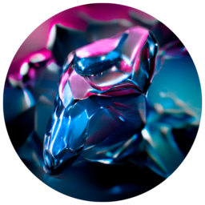

La forma más sencilla de instalar Windows 10 y 11.
Sin tecnicismos. Sin pagar a nadie. Para todos.
Windows 10/11 (64 bits) · No necesita instalación · Código abierto (GPL v3)
Instalar Windows no es difícil, solo lo parece. Mucha gente paga por algo que podría hacer en casa en media hora. Ruxi te coge de la mano: descarga Windows, prepara el USB automáticamente y te explica paso a paso, en lenguaje normal, hasta tenerlo funcionando.
9 pantallas que te llevan de principio a fin, sin tecnicismos.
GPT + UEFI + NTFS y el bypass de TPM/SecureBoot configurados solos.
Verifica el USB y la ISO, y bloquea el disco del sistema para que no la líes.
Cómo arrancar e instalar, adaptada a sobremesa/portátil y a tu caso.
Instala Chrome, VLC y más de un clic, o crea tu propio pack.
Escanea un QR y llévate los pasos en el teléfono mientras instalas.
Cuenta local, sin telemetría ni bloatware. Tú mandas.
Multi-idioma, temas de color y avisos de nuevas versiones.
Desde la propia app o usa una ISO que ya tengas.
Mínimo 8 GB (se borra entero, avisado quedas).
Ruxi formatea y graba todo solo en unos minutos.
Te explica cómo arrancar e instalar paso a paso.